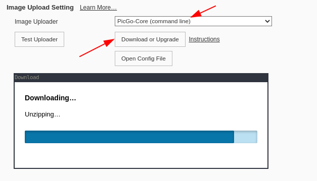
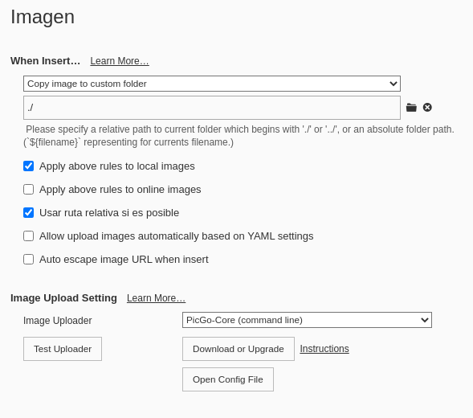

Typora sale de la beta y llega a la primera versión estable. El mejor editor Markdown multiplataforma que he probado hasta la fecha.
Y es que últimamente estoy creando los artículos con Typora sincronizandolos mediante rcsync con mi servidor WebDAV.
Typora pasa a ser de pago pudiendo activar 3 dispositivos con una licencia. El precio de una licencia es de 15€ y es necesario tener conexión a internet, al menos la primera vez que introduces la licencia, para habilitarla.
Puedes deshabilitar un dispositivo y activar otro para hacer uso de la licencia, pero si no puedes acceder al dispositivo, simplemente puedes activar Typora en el nuevo dispositivo y Typora desactiva automáticamente el dispositivo activado más antiguo para su código de licencia.
Lo cierto es que con una licencia, casi seguro que tienes más que suficiente. Una aplicación que vale cada uno de sus 15€.
Vamos a ver algunas de las configuraciones o usos que le doy para que conozcas el verdadero potencial.
Puedes instalar Typora en Windows, Linux, Mac desde la web oficial. Ahí te explican como hacerlo.
Para instalarlo en Ubuntu por el PPA oficial, es tan simple como:
wget -qO - https://typora.io/linux/public-key.asc | sudo apt-key add -
sudo add-apt-repository 'deb https://typora.io/linux ./'
sudo apt-get update
sudo apt-get install typoraA mi me gusta que aparezca la barra lateral y que recuerde el directorio donde estan mis notas. Para habilitar esta opción accede a Preferencias >> general >> On Launch >> Restore last closed folders
Es fantástico despreocuparse y no tener que estar guardando el archivo que estamos creando o editando. Habilita esta opción en Preferencias >> general y seleccionando en Guadado y autorecuperación Autoguardar.
Preferencias >> Editor >> revisar ortografía (Selecciona Español)
Una vez realizado, volviendo a la página de edición, pulsamos en la parte inferior derecha sobre el icono ES. En la parte superior aparecerá la opción para descargar el diccionario en el idioma que hemos seleccionado, en este caso, Español.
Si hay errores en la instalación del diccionario, podemos instalarlo desde este enlace. También están disponibles en el siguiente repositorio de GitHub.
Altarnar los diferentes modos de visualización con Ctrl+Mayuscula+ 1,2,3,4,L,F
Para enfocar solo la línea que estamos escribiendo, pulsaremos la tecla F8. Para deshabilitar esta opción, pulsaremos nuevamente la tecla F8.
Hay otro modo que es el modo máquina de escribir. Solo los mas viejos del lugar conocemos que es una máquina de escribir.
Cuando pulsas Enter, el documento se va desplazando por la pantalla como si fuera una máquina de escribir. Para deshabilitar el modo, utilizaremos nuevamente la tecla F9.
Como cualquier otra aplicación, para evitar distracciones, podemos maximizar a pantalla compelta Typora con la tecla F11.
Me gusta que cuando comienzas a escribir en sintaxis markdown, Typora cierre los pares de sintaxis. Por ejemplo, si escribes `, cierre de forma auntomática la segundo comilla.
Para seleccionar esta opción, irémos a Preferencias >> Editor >> Cerrado automático
Si despliegas el menú de Typora, encontrarás parte de los atajos disponibles. Casi todos los atajos de Typora, vienen precedidos de la tecla Ctrl.
Para acceder a los ajustes, utilizaremos Ctrl+,
Para acceder al menú superior, pulsaremos la tecla Alt y en la parte inferior de las palabras del menú, aparecerá subrayado la letra que tenemos que pulsar para desplegar el menú. Por ejemplo, para acceder a Formato, pulsaríamos Alt+o
Con Alt+Abajo, desplegaremos el primer menú.
Con Alt+Izquierda, nos moveremos por las diferentes opciones del menú.
Vamos utilizar la tecla Ctrl para editar Markdown. Para crear las cabeceras:
…
Como en cualquier otra aplicación:
Para seleccionar un bloque de texto, nos situaremos en el texto que queremos seleccionar y pulsando la tecla de Mayusculas, pulsaremos las teclas con flecha hacia arriba, abajo, izquierda, derecha.
Con Ctrl + a, seleccionaremos todo el texto que estemos editando.
Primero seleccionaremos el texto que deseamos copiar, por ejemplo, para seleccionar todo el texto de un documento Ctrl+a y para copiarlo en markdown, Ctrl+C
Si los temas por defecto que aparecen no te gustan, puedes cambiarlo descargando y añadiendo nuevos temas disponibles en este enlace.
Descomprime el archivo en el directorio ~/.config/Typora/themes/
Tiene que quedar en la raíz de este directorio el archivo con el nombre de tema .css
Ejemplo:
Descargaré el tema Minimalisim. Descomprimimos el archivo .zip. y lo copiamos en ~/.config/Typora/themes/.
Reiniciamos Typora y accedemos en el menú al apartado Temas donde aparecerán los nuevos temas Minimalisim.
Me gusta el tema Oscuro y uno de los que me gustan es OneDark
Fuente: https://github.com/sweatran/typora-onedark-theme
Typora permite pegar en el propio documento la imagen que hayas copiado desde una web, una captura de tu escritorio,… y Typora ejecutando PicGo-Core la subirá al directorio que indiques.
Para instalarlo podemos hacerlo desde la propia configuración de Typora.
Preferencias >> Editor >> Imagen.
Seleccionaremos las opciones que aparecen en la imagen.

Para comprobar que todo funciona correctamente, pulsaremos el botón Test Uploader.
Para que las imagenes se peguen en el documento con la ruta del archivo y se descarguen en el mismo directorio donde estan las notas markdown:

Publicado por Angel el Wednesday 08 December del 2021 y actualizado el Saturday 01 January del 2022
También te puede interesar:
Powered by org-bash-blog
Written in OrgMode with Emacs and converted to HTML with Pandoc

Este obra está bajo una licencia de Creative Commons Reconocimiento-NoComercial-CompartirIgual 4.0 Internacional.